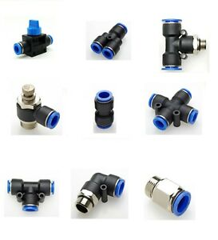

push fit couplers revision 2090

Challenges
There are a dizzying variety of hoses, pipes, couplers, fittings, adapters, and other plumbing fixtures. How can we reduce complexity while retaining broad compatibility.
Approaches
Wherever possible, Replimat prefers to use Push fit compression fittings for moving liquid and air. Efforts are directed toward adapting existing fittings to this system.